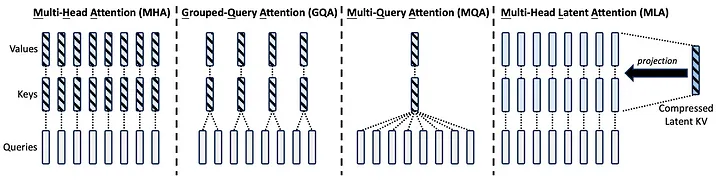
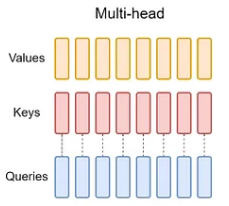
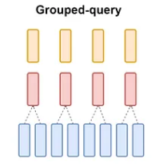
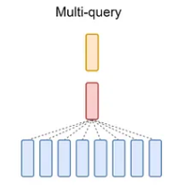

Multi-Head Latent Attention (MLA)
1. Giới thiệu
Attention là cách mô hình “nhìn” vào các token trong câu để hiểu mối quan hệ giữa chúng. Trong cơ chế Multi-head Attention (MHA) truyền thống, mỗi token được biểu diễn bằng ba vector: Query (Q), Key (K), và Value (V). Mô hình tính toán sự tương quan giữa Q và K để quyết định token nào quan trọng, rồi dùng V để tổng hợp thông tin.
Vấn đề là khi số token tăng lên (đặc biệt trong ngữ cảnh dài), kích thước của K và V cũng tăng, đòi hỏi rất nhiều bộ nhớ và tài nguyên tính toán. MLA là một biến thể của MHA, được giới thiệu lần đầu trong DeepSeek-V2 và cải tiến trong DeepSeek-V3, được thiết kế để nén thông tin trong K và V xuống một không gian nhỏ hơn (gọi là latent space) trước khi tính attention, nhằm giảm chi phí tính toán và bộ nhớ mà vẫn giữ được chất lượng.
2. Cách hoạt động MLA
-
Nén K và V xuống không gian latent
- Thay vì lưu toàn bộ vector K và V với kích thước đầy đủ (ví dụ 4096 chiều, tùy vào cấu hình mô hình), MLA dùng một lớp tuyến tính (linear layer) để chiếu (project) chúng xuống một không gian nhỏ hơn, gọi là latent dimension. Ví dụ, từ 4096 chiều xuống còn 512 chiều.
- Quá trình này giống như “tóm tắt” thông tin: thay vì giữ nguyên bản gốc dài dòng, bạn chỉ giữ lại phần cốt lõi, nhưng vẫn đủ để hiểu nội dung.
-
Tính toán attention trong không gian latent
- Sau khi nén, mô hình tính toán attention (sự tương quan giữa Q và K) trong không gian latent này. Vì kích thước nhỏ hơn, phép tính nhanh hơn và tốn ít bộ nhớ hơn.
- Kết quả attention sau đó được dùng để “truy xuất” thông tin từ V (cũng đã nén), rồi tái tạo lại đầu ra ở không gian gốc (4096 chiều) bằng một lớp tuyến tính khác.
-
Cấu trúc Multi-head giữ nguyên
- MLA vẫn giữ ý tưởng “multi-head” (nhiều đầu attention), tức là chia nhỏ quá trình tính toán thành nhiều phần song song để nắm bắt các khía cạnh khác nhau của dữ liệu. Nhưng nhờ nén latent, mỗi “head” giờ nhẹ hơn rất nhiều.
Ví dụ
Hãy tưởng tượng bạn có một cuốn sách dày 1000 trang (vector K và V đầy đủ). Đọc hết cả cuốn để tìm thông tin cần thiết thì lâu và tốn sức. MLA giống như việc bạn tạo một bản tóm tắt 50 trang (latent space), vẫn chứa các ý chính. Bạn đọc tóm tắt để tìm đoạn quan trọng, rồi quay lại cuốn sách gốc lấy thông tin chi tiết khi cần. Kết quả là vừa nhanh, vừa tiết kiệm thời gian.
Trong DeepSeek-V3, vector K và V ban đầu có thể là 4096 chiều, nhưng sau khi qua MLA, chúng được nén xuống (giả sử) 512 chiều. Điều này giảm đáng kể lượng bộ nhớ cần thiết để lưu trữ và tính toán.
Low-rank Key-Value Joint Compression (nén bậc thấp liên hợp Key-Value)
Kỹ thuật cốt lõi của MLA, giúp giảm đáng kể lượng bộ nhớ cần thiết cho KV cache (bộ nhớ đệm Key-Value) trong quá trình suy luận (inference).
Trong Multi-head Attention (MHA) truyền thống, mỗi token trong chuỗi được biểu diễn bằng các vector Key (K) và Value (V), và những vector này được lưu toàn bộ trong KV cache để dùng lại khi sinh ra token mới. Với chuỗi dài (như 128K token trong DeepSeek-V3) và kích thước lớn (ví dụ 4096 chiều), KV cache ngốn rất nhiều bộ nhớ – có thể lên đến hàng trăm GB.
Low-rank Key-Value Joint Compression giải quyết vấn đề này bằng cách “nén” KKK và VVV xuống một không gian bậc thấp (low-rank), tức là giảm số chiều của chúng mà vẫn giữ được thông tin quan trọng.

3. Lợi ích kỹ thuật
-
Giảm bộ nhớ:
-
Trong MHA, lưu KKK và VVV cho nnn token cần O(n⋅dmodel)O(n \cdot d_{\text{model}})O(n⋅dmodel) bộ nhớ mỗi head.
-
Với MLA, chỉ cần O(n⋅dlatent)O(n \cdot d_{\text{latent}})O(n⋅dlatent), giảm tỷ lệ dmodel/dlatentd_{\text{model}} / d_{\text{latent}}dmodel/dlatent (có thể 8x hoặc 16x tùy cấu hình).
-
Ví dụ: Với chuỗi 2048 token, dmodel=4096d_{\text{model}} = 4096dmodel=4096, MHA cần ~8 GB bộ nhớ cho KKK và VVV. MLA với dlatent=512d_{\text{latent}} = 512dlatent=512 chỉ cần ~1 GB.
-
-
Tăng tốc độ:
-
Phép nhân QKTQK^TQKT trong MHA có độ phức tạp O(n2⋅dmodel)O(n^2 \cdot d_{\text{model}})O(n2⋅dmodel). Với MLA, giảm xuống O(n2⋅dlatent)O(n^2 \cdot d_{\text{latent}})O(n2⋅dlatent).
-
Điều này đặc biệt hữu ích trong suy luận, khi DeepSeek-V3 đạt 60 token/giây nhờ kết hợp MLA và speculative decoding từ MTP.
-
-
Hiệu quả với chuỗi dài:
- MLA giúp DeepSeek-V3 xử lý ngữ cảnh lớn (hàng nghìn token) mà không bị quá tải, rất quan trọng cho các bài toán như lập trình hay toán học phức tạp.
-
Giữ chất lượng:
- Thử nghiệm trong DeepSeek-V2 (tiền thân của V3) cho thấy MLA không làm giảm hiệu suất so với MHA, nhờ các lớp chiếu được huấn luyện kỹ lưỡng.
4. Các cơ chế khác
4.1 Multi-Head Attention (MHA)
Mỗi head trong MHA có một bộ Key-Value riêng → KV cache rất lớn.

- Khi độ dài chuỗi đầu vào tăng, KV cache tăng lên nhanh chóng, gây tắc nghẽn bộ nhớ (memory bottleneck) và làm chậm quá trình suy luận.
4.2 Multi-Query Attention (MQA)
Tất cả các head dùng chung một cặp Key (K) - Value (V).

Ưu điểm của MQA:
- KV cache nhỏ hơn → Giảm tiêu thụ bộ nhớ, giúp suy luận nhanh hơn.
- Tốt cho các mô hình lớn khi cần tốc độ cao.
Nhược điểm của MQA:
❌ Vì các head phải chia sẻ cùng một Key-Value, mô hình có thể mất đi khả năng biểu diễn đa dạng, dẫn đến giảm hiệu suất so với MHA.
4.3 Grouped-Query Attention (GQA)
Các head được chia thành nhóm, mỗi nhóm dùng chung một KV cache.

Ví dụ: Nếu có 16 head → chia thành 4 nhóm, mỗi nhóm 4 head sẽ dùng chung một KV cache.
Ưu điểm của GQA:
- Giảm KV cache mà không giảm mạnh hiệu suất như MQA.
- Cân bằng giữa tốc độ suy luận và chất lượng mô hình.
Nhược điểm của GQA:
❌ Vẫn không thể đạt hiệu suất cao bằng MHA trong một số tác vụ nhất định.
- Nếu ưu tiên tốc độ suy luận (inference speed) → MQA (ví dụ: chatbot AI cần phản hồi nhanh).
- Nếu cần cân bằng giữa tốc độ và chất lượng → GQA (ví dụ: mô hình tổng hợp văn bản).
- Nếu chất lượng mô hình là quan trọng nhất → MHA (ví dụ: dịch ngôn ngữ, NLP chuyên sâu).
References
https://aman.ai/primers/ai/deepseek-R1/#multihead-latent-attention-mla
https://shaktiwadekar.medium.com/deepseek-r1-model-architecture-853fefac7050
https://medium.com/towards-data-science/deepseek-v3-explained-1-multi-head-latent-attention-ed6bee2a67c4